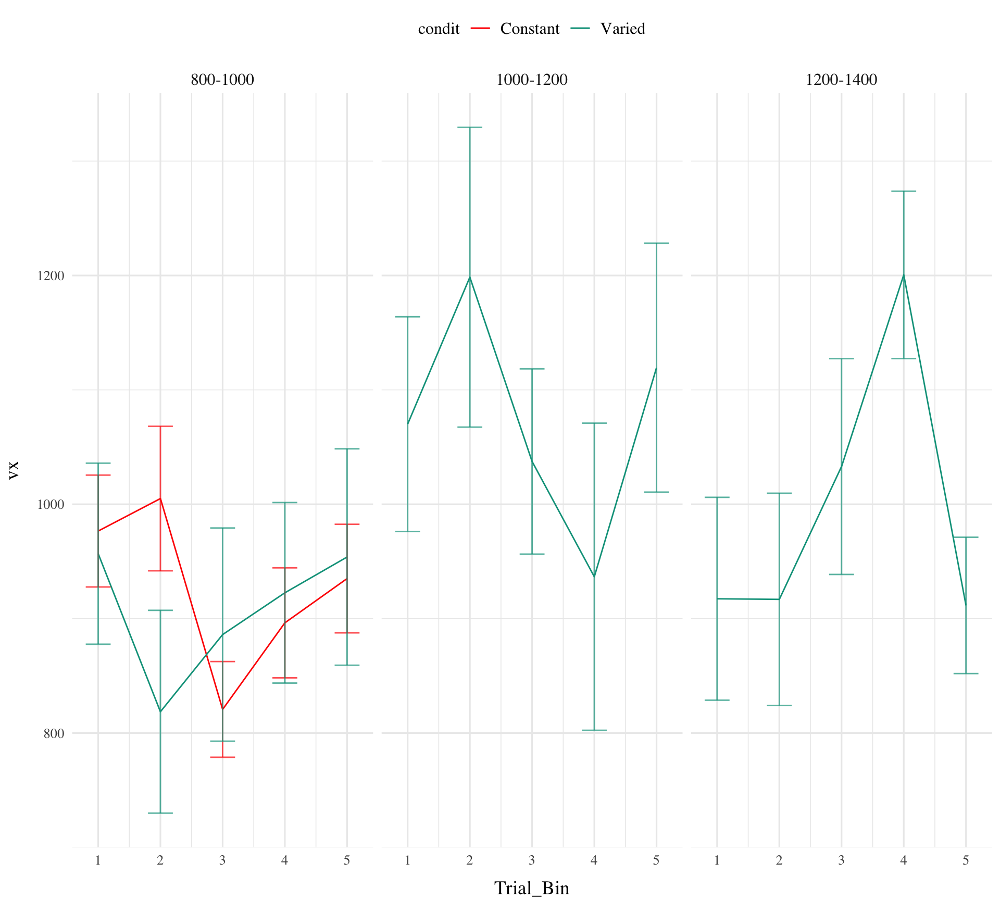

Experiment 1 Analysis
Dictionary
| Variable Name | Variable Levels | Description |
|---|---|---|
| condit | Constant, Varied | Condition of the experiment: constant or varied |
| tOrder | Test First, Train First | Order of testing and training stages: test first or train first |
| expMode | train, train-Nf, test-Nf, etc. | Mode of the experiment: train, train-Nf, test-Nf, etc. |
| trainStage | Beginning, Middle, End, Test | Stage of the training: beginning, middle, end, or test |
| expStage | TrainStart, intTest1, etc. | Stage of the experiment: TrainStart, intTest1, TrainMid1, etc. |
| band | 1, 2, 3, 4, 5, 6 | Band number |
| vb | 100-300, 350-550, etc. | Velocity band range |
| lowBound | 100, 350, 600, etc. | Lower bound of the velocity band range |
| feedback | 0, 1 | Feedback type: 0 (no feedback), 1 (feedback) |
| stage | 1, 2, 3, etc. | Stage number of the experiment |
Methods
Participants A total of 166 participants (XXX% female, XXX% male) were recruited from the Indiana University Introductory Psychology Course. The average age of participants was XXX years (SD = XXX). Participants were randomly assigned to one of two training conditions: varied training or constant training.
Design The experiment employed a 2 (Training Condition: varied vs. constant).
Procedure Upon arrival at the laboratory, participants were provided with a description of the experiment and signed informed consent forms. They were then seated in front of a computer equipped with a mouse and were given instructions on how to perform the “Hit The Wall” (HTW) visuomotor extrapolation task.
The HTW task involved launching projectiles to hit a target displayed on the computer screen. Participants completed a total of 90 trials during the training stage. In the varied training condition, participants encountered three velocity bands (800-1000, 1000-1200, and 1200-1400). In contrast, participants in the constant training condition encountered only one velocity band (800-1000).
During the training stage, participants in both conditions also completed “no feedback” trials, where they received no information about their performance. These trials were randomly interleaved with the regular training trials.
Following the training stage, participants proceeded to the testing stage, which consisted of three phases. In the first phase, participants completed “no-feedback” testing from three novel extrapolation bands (100-300, 350-550, and 600-800), with each band consisting of 15 trials.
In the second phase of testing, participants completed “no-feedback” testing from the three velocity bands used during the training stage (800-1000, 1000-1200, and 1200-1400). In the constant training condition, two of these bands were novel, while in the varied training condition, all three bands were encountered during training.
The third and final phase of testing involved “feedback” testing for each of the three extrapolation bands (100-300, 350-550, and 600-800), with each band consisting of 10 trials. Participants received feedback on their performance during this phase.
Throughout the experiment, participants’ performance was measured by calculating the distance between the produced x-velocity of the projectiles and the closest edge of the current velocity band. Lower distances indicated better performance.
After completing the experiment, participants were debriefed and provided with an opportunity to ask questions about the study.
Code

Code
# vpt1=plotWithTable(vp1,vt1,arrange="V") Code
| Band | Group | Block_1 | Block_2 | Block_3 | Block_4 | Block_5 |
|---|---|---|---|---|---|---|
| 800-1000 | Constant | 920 (10) | 935 (7) | 917 (7) | 909 (7) | 934 (7) |
| 800-1000 | Varied | 966 (20) | 988 (16) | 1019 (17) | 1024 (17) | 1018 (19) |
| 1000-1200 | Varied | 1072 (23) | 1093 (18) | 1082 (18) | 1116 (16) | 1070 (17) |
| 1200-1400 | Varied | 1111 (24) | 1178 (19) | 1177 (21) | 1184 (18) | 1207 (20) |
Code

Code
| Band | Group | Block_1 | Block_2 | Block_3 | Block_4 | Block_5 |
|---|---|---|---|---|---|---|
| 800-1000 | Constant | 199 (6) | 127 (4) | 126 (4) | 114 (4) | 103 (5) |
| 800-1000 | Varied | 242 (12) | 189 (10) | 199 (11) | 192 (11) | 174 (12) |
| 1000-1200 | Varied | 271 (15) | 197 (11) | 208 (10) | 171 (10) | 162 (10) |
| 1200-1400 | Varied | 359 (15) | 246 (12) | 259 (13) | 228 (11) | 213 (12) |
Testing

Code
# non linear learning models
# Fit the model
model <- lmer(
dist ~ vb * condit +
(1 | id) +
(1 + gt.train | id:condit),
# family = binomial(link = "logit"),
data = e1[e1$expMode=="train",]
)
model <- lmer(
vx ~ vb * condit + I(gt.train^2) +
(1 + gt.train + I(gt.train^2) | id:condit),
data = e1[e1$expMode=="train",]
)
summary(model)
e1$gt.train.scaled <- scale(e1$gt.train)
# Fit the model with the rescaled variables
model <- lmer(
dist ~ vb * condit + I(gt.train.scaled^2) +
(1 + gt.train.scaled + I(gt.train.scaled^2) | id:condit),
data = e1[e1$expMode=="train",]
)
summary(model)
library(nlme)
# Define a non-linear function for the learning effect
learning_effect <- function(time, Asym, R0, lrc) {
Asym + R0 * exp(-exp(lrc) * time)
}
# Fit the model
model <- nlme(
vx ~ learning_effect(gt.train.scaled, Asym, R0, lrc) * condit,
fixed = Asym + R0 + lrc ~ 1,
random = Asym + R0 ~ 1 | id,
start = c(Asym = 1, R0 = 1, lrc = 0),
data = e1[e1$expMode=="train",]
)
e1$condit_numeric <- as.numeric(e1$condit)
# Fit the model
model <- nlme(
vx ~ learning_effect(gt.train.scaled, Asym, R0, lrc) * condit_numeric,
fixed = Asym + R0 + lrc ~ 1,
random = Asym + R0 ~ 1 | id,
start = c(Asym = 1, R0 = 1, lrc = 0),
data = e1[e1$expMode=="train",]
)
summary(model)
model <- nlme(
# Reflects the shift in velocity across conditions and time
vx ~ learning_effect(gt.train.scaled, Asym, R0, lrc) * condit_numeric,
# Fixed effects structure
fixed = Asym + R0 + lrc ~ 1,
# Random effects structure, now includes 'lrc' for individual learning rates
random = Asym + R0 + lrc ~ 1 | id,
# Starting values for the parameters
start = c(Asym = 1, R0 = 1, lrc = 0),
# Subset of the data used for training phase
data = e1 %>% filter(expMode=="train")
)
# Prints out a summary of the model
summary(model)